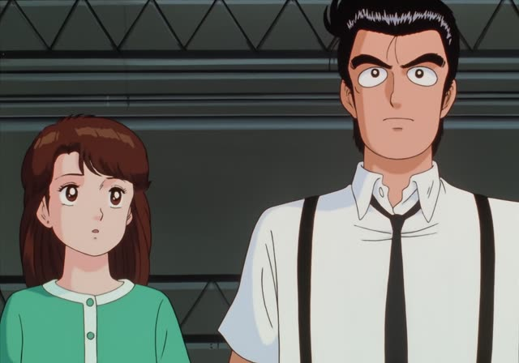
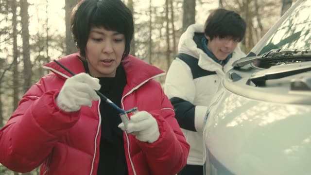

という
| Polite | ～という |
|---|---|
| Casual | ～っていう everyday spoken form |
Same meaning: "called, named, the thing known as". っていう is how you say it in speech.

Oishinbo · Episode 36
これはネズミバタという魚ですよ。
"This is a fish called nezumibata."
AというB means "a B called A": ネズミバタという魚. You use it for names people may not know. In speech it's usually っていう.
On this card, the fishmonger shows a strange spotted fish. ですよ makes it polite.
AというのはB / Aっていうのは: "A is (a thing that)...", to explain a word.
Shirokuma Cafe · Episode 7
それをモテ期って言うんだって。
"They say that's called a 'popular phase'."
On this card, Panda explains a new word to Shirokuma. ～って言う: it's called...
Quick Examples
Introducing yourself on the phone.
山田という者ですが…
"This is someone named Yamada..."
Polite way to give your name.
PoliteRecommending a café.
「ひまわり」っていうカフェ、知ってる？
"Do you know a café called Himawari?"
CasualAsking a teacher.
これは日本語で何と言いますか？
"What's this called in Japanese?"
PoliteYour friend uses a new word.
「エモい」っていうのは、どういう意味？
"What does 'emoi' mean?"
っていうのは: explaining a word.
CasualWith and without
魚を買った。
"I bought a fish."
ネズミバタという魚を買った。
"I bought a fish called nezumibata."
Examples from Media
Dungeon Meshi · Episode 16
この迷宮を造ったという存在ですよね？
"He's the one said to have built this dungeon, right?"
という can also mean "said to".
Dungeon Meshi · Episode 16
愛情というやつだ。
"It's a thing called love."
Shirokuma Cafe · Episode 13
で、七夕っていうのは
"So Tanabata is..."
っていうのは: explaining a word.
Kekkon Dekinai Otoko · Episode 1
スパゲティっていうのは
"Spaghetti, you see, is..."

Quartet · Episode 1
イチロー選手のエラー動画集っていうのを
"A video called 'Ichiro's Errors'"
Good Morning Call · Episode 12
こいつにはね、上原っていう彼…
"She's got a boyfriend called Uehara..."
Samurai Champloo · Episode 15
まさかなどという言葉は必要ない。
"There's no need for a word like 'impossible'."